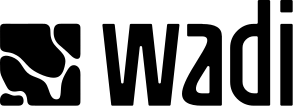
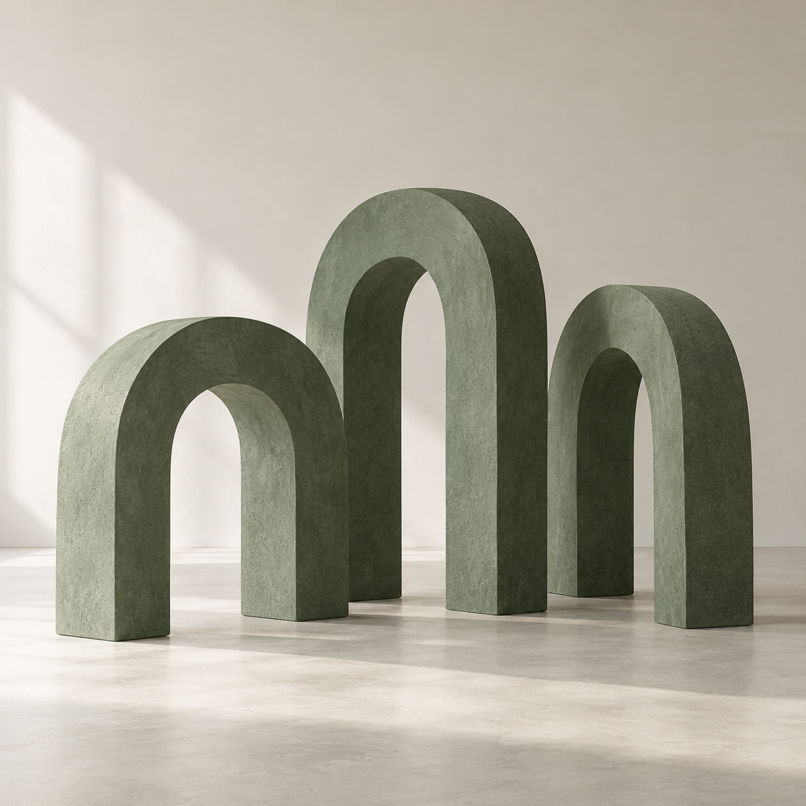

Entender
Observamos cómo trabaja el equipo y dónde se pierde tiempo y contexto.

Rediseñamos la forma en que trabajan los equipos mediante IA, creando workflows de alto impacto que aumentan la productividad sin perder el criterio humano.
Prompts por aquí. Herramientas por allá. Cada persona encuentra su manera de avanzar. Pero el trabajo del equipo sigue fragmentado.
02 / NUESTRA TESIS
Cuando rediseñas el workflow, la tecnología encuentra su lugar. Y las personas, más espacio para aportar criterio.
UN PILOTO. UN CAMBIO CONCRETO.
De usar IA en tareas sueltas a integrarla en la forma en que tu equipo trabaja, decide y entrega.
Implementados. Adoptados. Medidos.
Con tu equipo, en su contexto y con las herramientas que necesita.
Diseñamos con las personas que hacen el trabajo. Acompañamos el cambio hasta llevarlo al día a día.
Observamos cómo trabaja el equipo y dónde se pierde tiempo y contexto.
Seleccionamos hasta dos flujos de trabajo por impacto, viabilidad y valor para el negocio.
Definimos el nuevo flujo, los roles de la IA y los puntos de decisión humana.
Construimos, integramos y probamos el flujo de trabajo con trabajo real.
Acompañamos al equipo con práctica, documentación y ajustes en contexto.
Comparamos con el punto de partida: tiempo, calidad y adopción efectiva.
ANTES
Cada persona resuelve. El equipo vuelve a empezar.
DESPUÉS · CON WADI
El conocimiento fluye, las personas deciden y el avance se puede medir.
Las personas conservan el control en las decisiones que importan.
Diseñamos soluciones útiles, usables y listas para el trabajo real.
Partimos del proceso y su contexto para elegir la tecnología adecuada.
El éxito se ve en el uso cotidiano y en resultados que podemos observar.
Somos un equipo con más de 10 años de experiencia en diseño de producto digital e implementación de flujos de trabajo en distintas industrias, en Colombia y el mundo. Combinamos diseño, tecnología y conocimiento del negocio para transformar procesos complejos en formas de trabajar más claras, útiles y humanas.

EL SIGUIENTE WORKFLOW EMPIEZA CON UNA CONVERSACIÓN.
Identifiquemos dónde la IA puede
generar un cambio real en tu equipo.